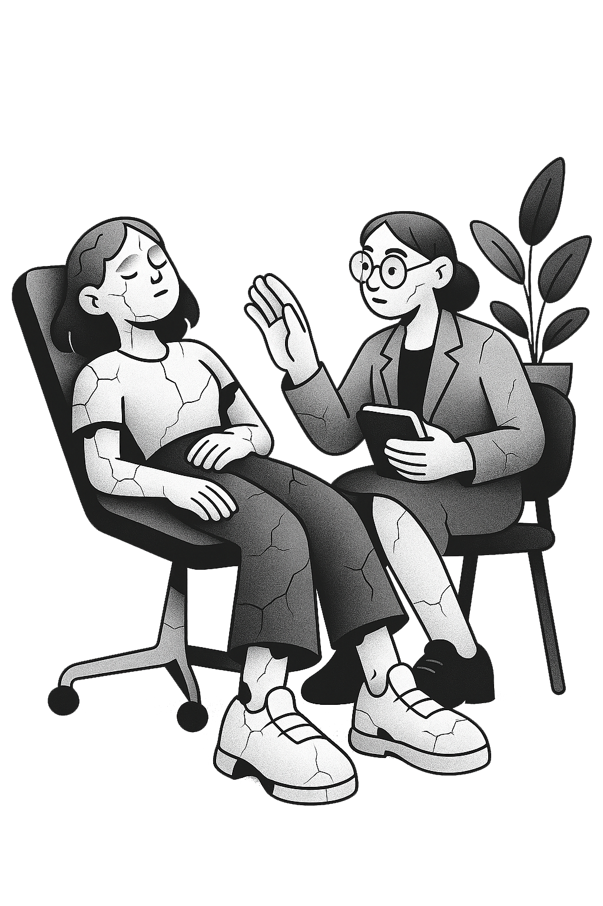

Kit Psicologico Practico
Distancia de los pensamientos
Aprende a tomar distancia de tus pensamientos y desactivar la ansiedad con este kit practico de ejercicios guiados y registro semanal. No se trata de eliminar los pensamientos, sino de cambiar tu relacion con ellos.
$7.99 USD
01 / QUE INCLUYE
Contenido del kit
- Ejercicios guiados de defusion cognitiva para crear espacio entre tu y tus pensamientos
- Registro semanal de patrones y frecuencias del pensamiento
- Tecnicas de observacion sin juicio (Mindfulness aplicado)
- Estrategias de redireccion atencional para momentos de ansiedad
- Guia de autocompasin para dejar de luchar contra la mente
02 / PARA QUIEN
Ideal si...
- Sientes que tus pensamientos te arrastran sin poder detenerlos
- Tienes dificultad para concentrarte por culpa de la ansiedad
- Reaccionas de forma intensa a pensamientos que sabes que no son utiles
- Quieres aprender a ser el observador de tu mente, no su prisionero
03 / QUIENES LO DISENAN

Creado por Edith Delgado
Psicologa clinica y psicoterapeuta con +18 años de experiencia. Especialista en EMDR, ACT, DBT, FAP, Mindfulness e Hipnosis Clinica. Cada kit está diseñado desde la evidencia científica y la práctica clínica real.